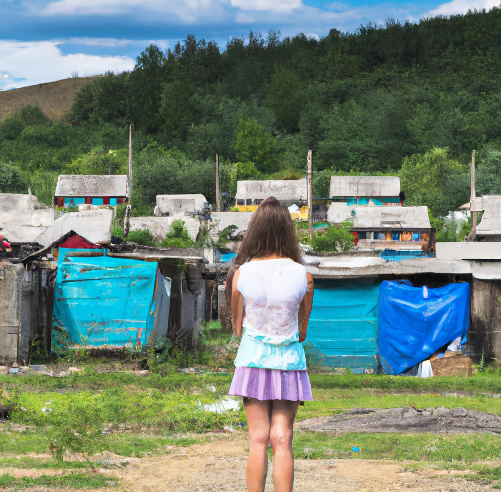
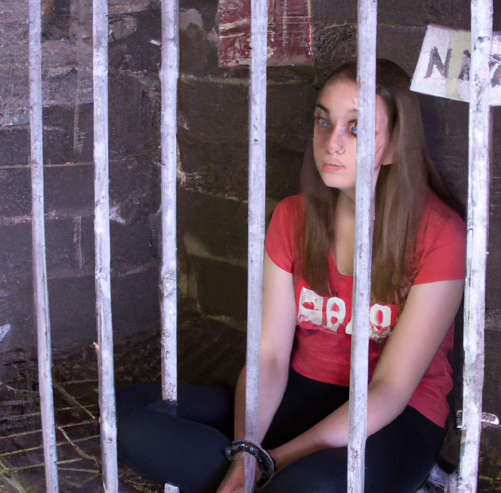

I was just a young girl from India when I was lured away from my home by the promise of a better life. I was living in a small, poor village, and I had always dreamed of escaping to a place where I could have more opportunities and a brighter future.
One day, a woman came to my village and told me that she could help me achieve my dreams. She said that she had connections in the city, and that she could get me a job as a housekeeper in a wealthy household. She promised me that I would have a warm bed to sleep in, plenty of food to eat, and a chance to earn my own money.
I was desperate to escape my poverty-stricken life, and I was easily swayed by the woman's promises. I packed my bags and left with her, leaving my family and my home behind.
But as it turned out, the woman was not who she claimed to be. She was a trafficker, and she had tricked me into leaving with her. I was taken to a different city and forced into a life of abuse and exploitation. I was never given the job that I had been promised, and I was never allowed to leave.
I was trapped with my traffickers for years, always at their mercy. I was beaten, starved, and forced to do things that no person should ever have to endure But despite all of this, I never lost hope. I knew that one day, I would find a way to escape and start a new life.
And finally, that day came. It was a risky move, and I knew that if I was caught, I would face severe consequences. But I was desperate, and I was willing to take the risk.
One night, while my traffickers were distracted, I made my move. I gathered up whatever belongings I had and sneaked out of the house. I ran as fast as I could, not looking back until I was sure that I was far enough away.
I had no idea where I was going, or how I would survive. All I knew was that I had to get as far away from my traffickers as possible. I walked for hours, following the road wherever it led.
Finally, I stumbled upon a small town. I was starving and exhausted, but I was also relieved to have found someplace safe. I found a police station and begged for help. The officers there took me in and called my family, who had been searching for me for years.
I was finally free, and I knew that I had to do something to help other victims like myself. That's when I dedicated my life to hunting down traffickers and killing them. And kill them slowly, too. Torture them the same as they tormented me. Make them beg for their life. Make them gain hope, and then take it away from them. Slowly cut off their limbs, one after another... till they bleed out, stained with their blood and fecal matter...